视频 / Video
视频来源 / Video sources
Karen Bass concedes LA mayoral race to Nithya Raman
ABC News · 20261105 · 112s · 12/12 frames with faces
Los Angeles Mayor-elect Nithya Raman makes remarks after winning mayoral race
ABC7 · 20261106 · 832s · 9/10 frames with faces
Los Angeles Mayor Karen Bass, challenger Nithya Raman face off in mayoral debate
CBS LA · 20260820 · 158s · 17/17 frames with faces
关键帧与人脸识别 / Keyframes and face identity
LA_bass_concede

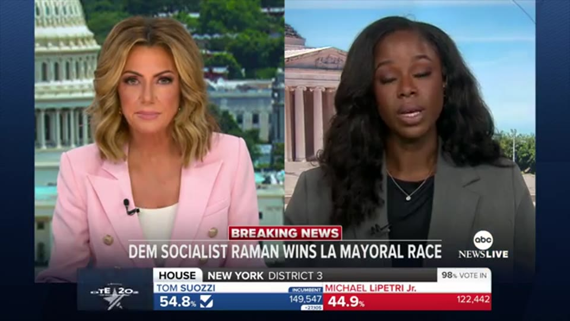
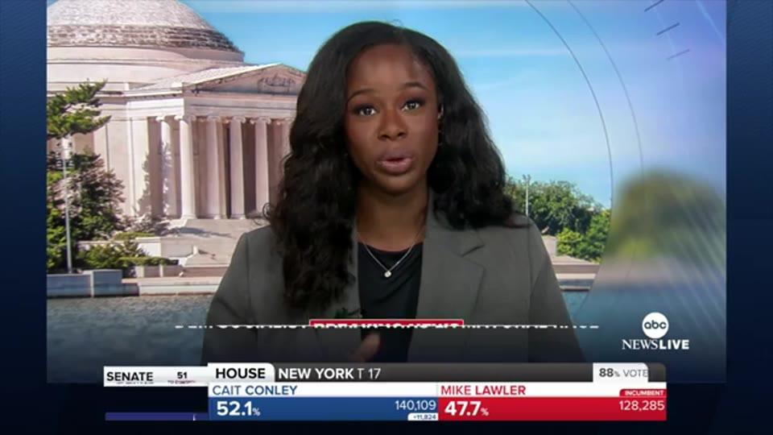
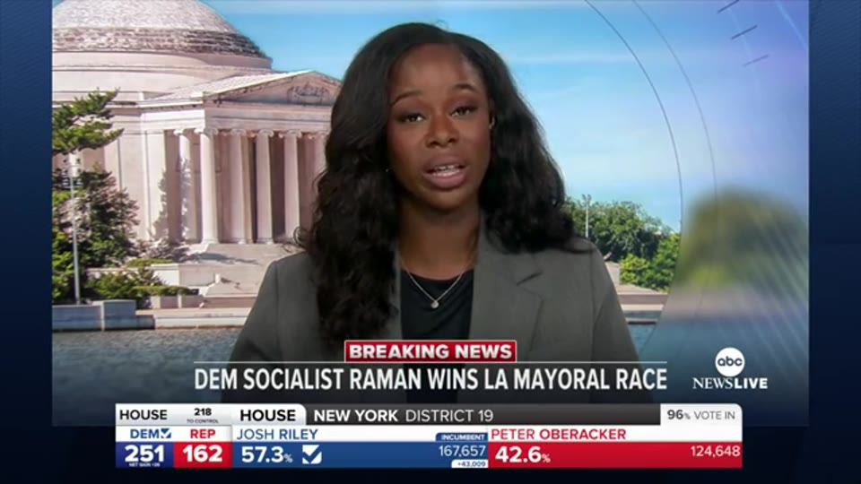
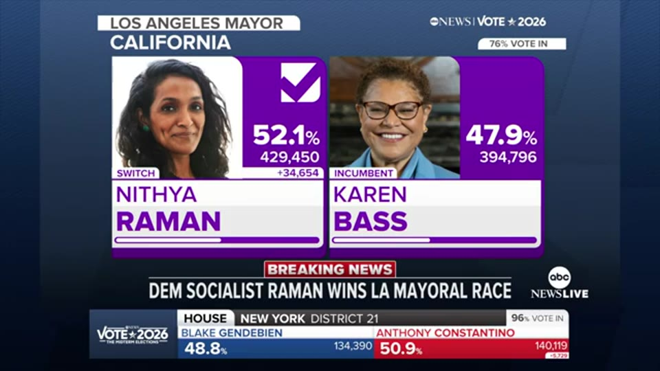
LA_raman_win
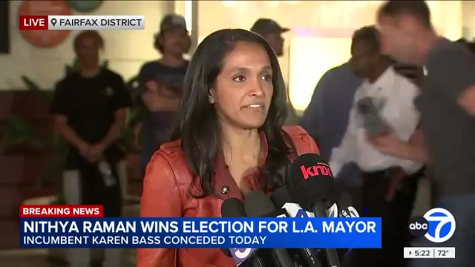
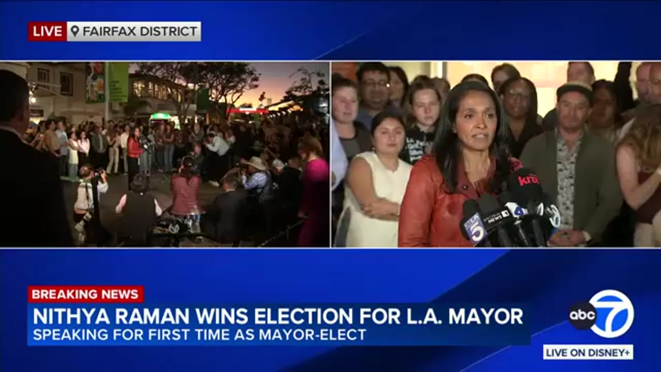
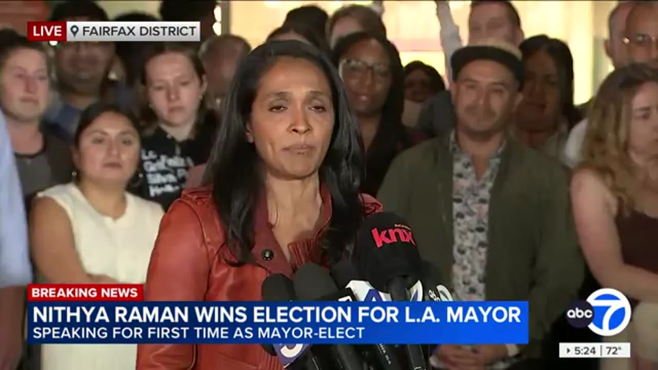

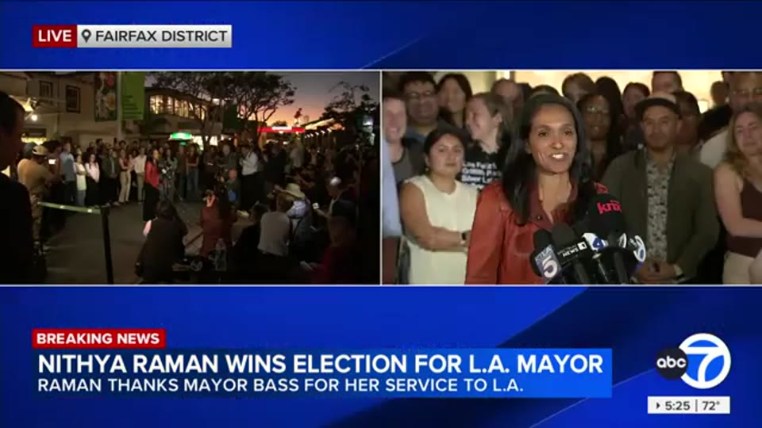
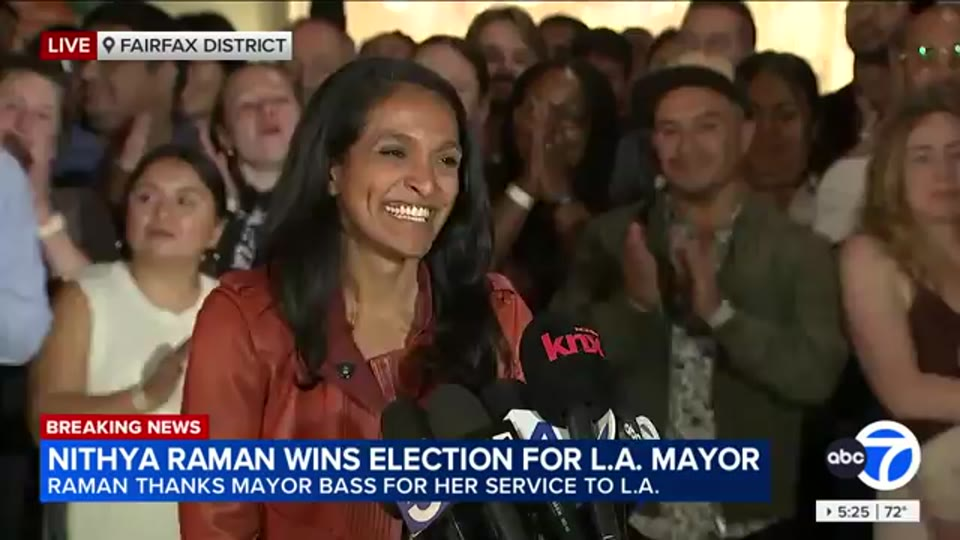
LA_debate_clip

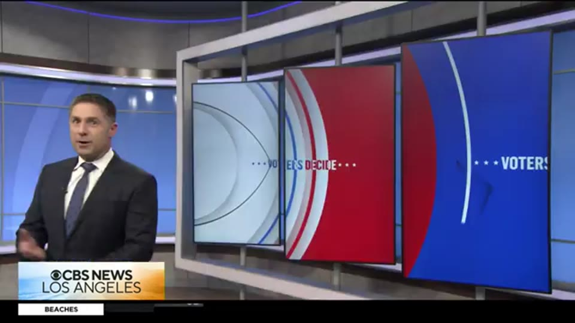
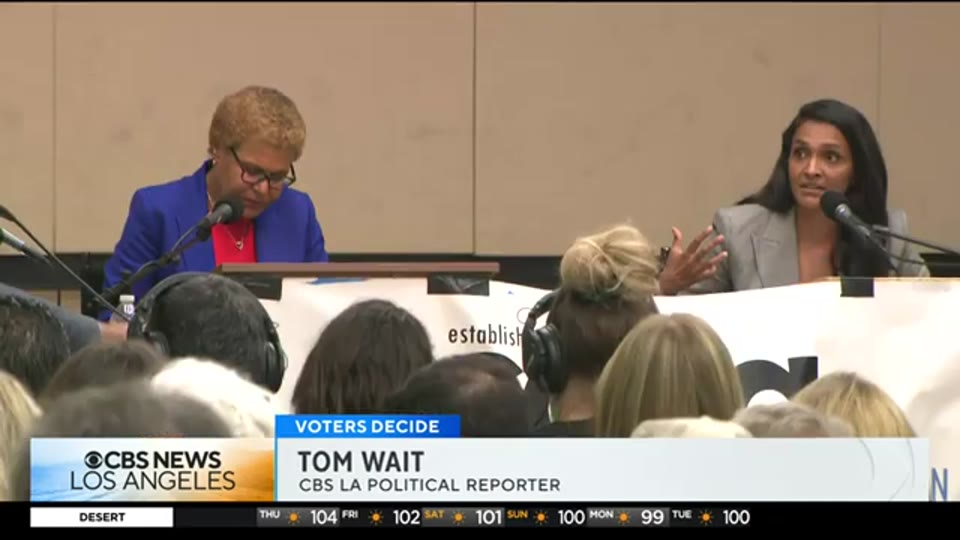